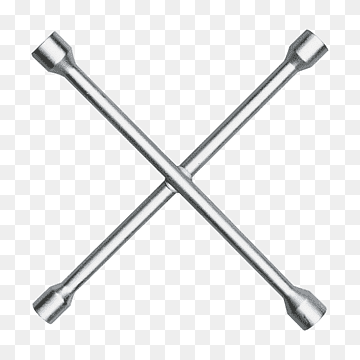
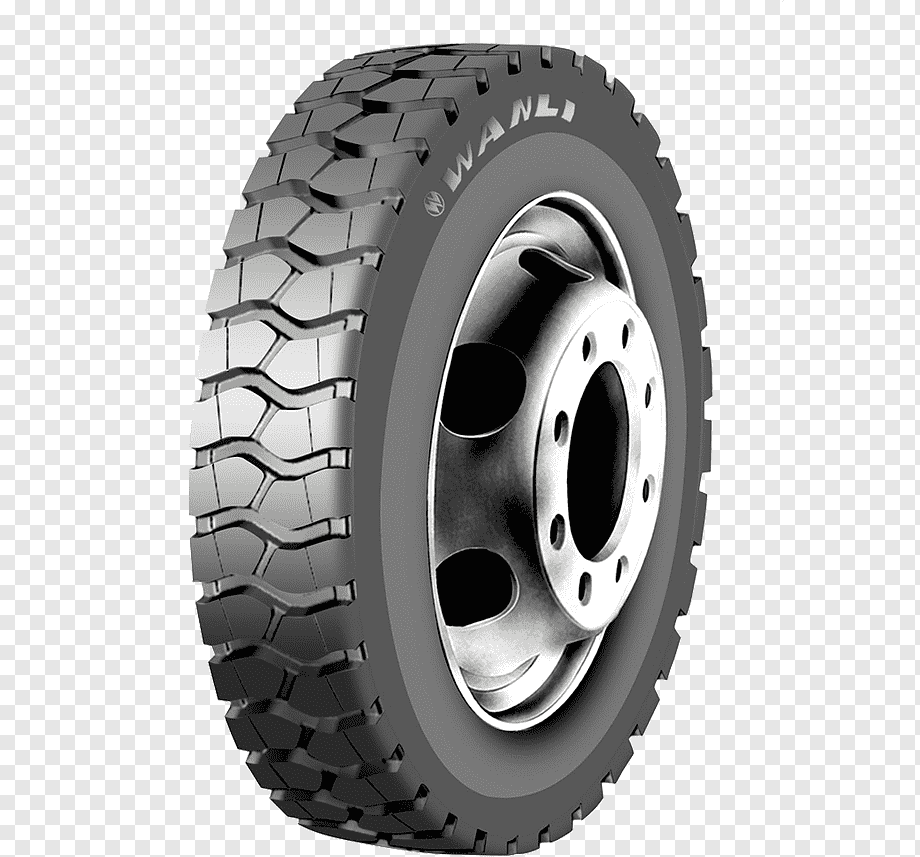
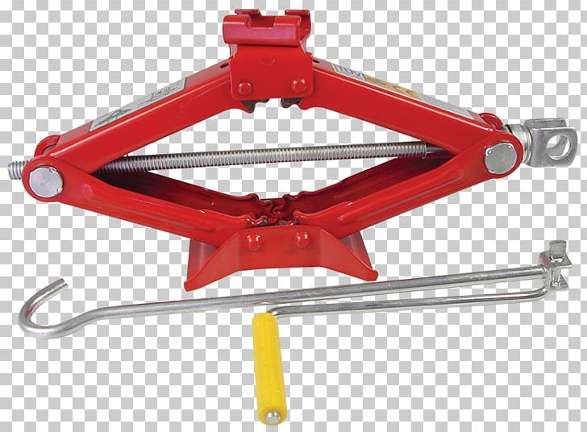
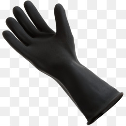
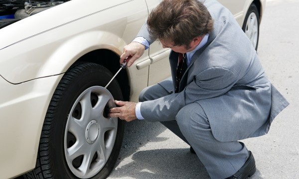
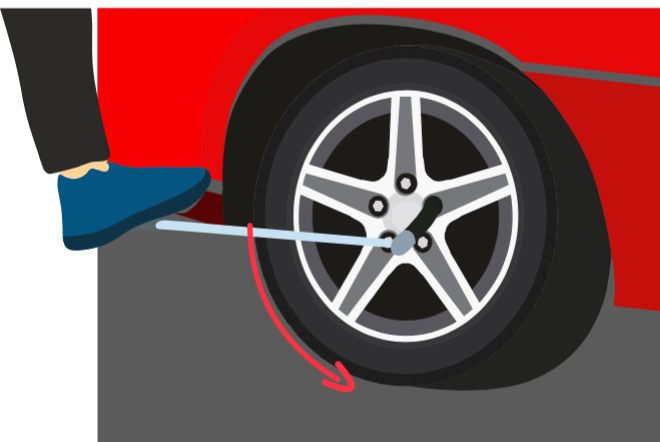
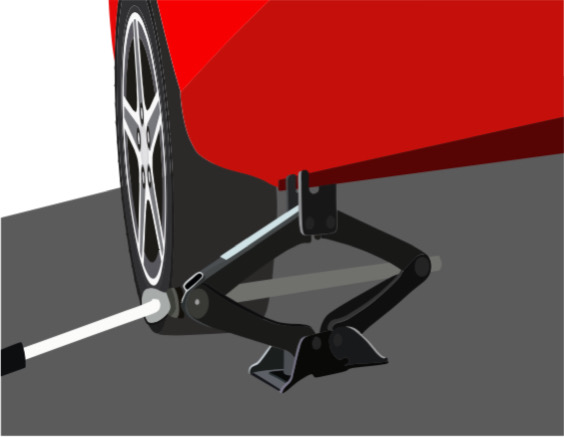
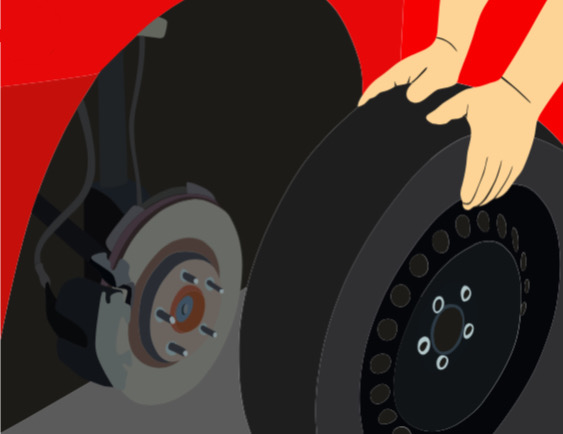
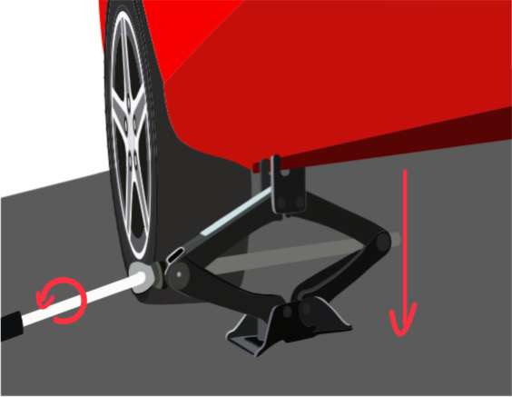
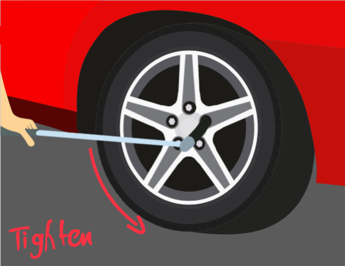

Changing Car Tire on emergency
Changing a car tire is an important skill that every driver should have.
It's a relatively simple process that can save you time and money by
avoiding a tow truck. In this instructional presentation, we will cover
the basic steps required to change a tire, but keep in mind that these
instructions may vary depending on the make and model of your car. This
guide is intended for drivers who have never changed a tire before, or
who need a refresher.

Warnings:
Changing a tire can be dangerous if not done correctly.
If you feel uncomfortable or unsure at any point during the process, seek
assistance.

Caution:
Always park your car on a flat surface away from traffic,
engage the parking brake,
and turn on the hazard lights before attempting to change a tire.
Danger:
Never attempt to change a tire on a slope, on soft ground, or on a busy
road.
Make sure you have all the necessary equipment and supplies before
starting the process.
equipments:
- Spare tire
- Jack
- Lug wrench
- Wheel chocks (optional but recommended)
- Gloves (optional)





Step by Step instructions
-
Locate the spare tire, jack, and lug wrench in your car.
These are usually stored in the trunk or under the car, somtimes you can
find the jack beneith the driver seat too
.jpeg)
-
if your car has a hub Cap that covers the tires bolts and lugs remove it
by the flat end of the lug wrench to pry it off

-
Loosen the lug nuts on the flat tire by turning them counterclockwise
with the lug wrench.
Do not remove them completely at this point.

-
Place the jack under the car in the designated jacking point.
Refer to your car's owner's manual for the location of the jacking
point.
-
Use the jack to lift the car until the flat tire is about six inches off
the ground.

-
Finish unscrewing the lug nuts and remove the flat tire from the car.

-
Align the spare tire with the wheel studs and put the lug nuts back on.
Tighten them by turning them clockwise, but do not fully tighten them
yet.

- Lower the car back down using the jack.

-
Use the lug wrench to fully tighten the lug nuts in a star pattern. This
ensures that the tire is secured evenly.

- Replace the hubcap (if applicable).
- Double-check the tightness of the lug nuts before driving
Conclusion
changing tires are essential skill to have as a driver. using this step by
step instructions, you can safley change a flat tire and get back on the
road quickly.
always priorities saftey during the proccess
Mhd Eyad Abou Ker / 40208070 / Bassel Attallah
coded with HTML, CSS and McCafe :)